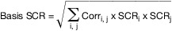
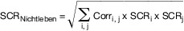
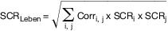
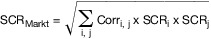

- 1.
Berechnung der Basissolvabilitätskapitalanforderung (BSCR)
Die in § 100 dargelegte Basissolvabilitätskapitalanforderung wird wie folgt ermittelt:

wobei SCRi das Risikomodul i und SCRj das Risikomodul j bezeichnet; „i, j“ bedeutet, dass in der Summe alle möglichen Kombinationen von i und j erfasst sein sollten. Bei der Berechnung treten an die Stelle von SCRi und SCRj:
SCRNichtleben: Nichtlebensversicherungstechnisches Risikomodul;
SCRLeben: Lebensversicherungstechnisches Risikomodul;
SCRKranken: Krankenversicherungstechnisches Risikomodul;
SCRMarkt: Risikomodul Marktrisiken;
SCRAusfall: Risikomodul Gegenparteiausfall.
Der Faktor „Corr i, j“ steht für die Angaben in Zeile i und Spalte j der folgenden Korrelationsmatrix:
| j | Markt | Gegenpartei-
ausfall | Lebens-
versicherung | Kranken-
versicherung | Nicht-Lebens-
versicherung |
|---|
| i |
|---|
| Markt | 1 | 0.25 | 0.25 | 0.25 | 0.25 |
| Gegenparteiausfall | 0.25 | 1 | 0.25 | 0.25 | 0.5 |
| Lebensversicherung | 0.25 | 0.25 | 1 | 0.25 | 0 |
| Krankenversicherung | 0.25 | 0.25 | 0.25 | 1 | 0 |
| Nicht-Lebensversicherung | 0.25 | 0.5 | 0 | 0 | 1 |
- 2.
Berechnung des nichtlebensversicherungstechnischen Risikomoduls
Das in § 101 genannte nichtlebensversicherungstechnische Risikomodul errechnet sich wie folgt:

wobei SCRi das Untermodul i und SCRj das Untermodul j bezeichnet; „i, j“ bedeutet, dass in der Summe alle möglichen Kombinationen von i und j erfasst sein sollten. Bei der Berechnung treten an die Stelle von SCRi und SCRj :
SCRNL-Prämien/Rückstellung: Untermodul Nichtlebensversicherungprämien- und ‑reserverisiko;
SCRNL-Katastrophen: Untermodul Nichtlebenskatastrophenrisiko.
- 3.
Berechnung des lebensversicherungstechnischen Risikomoduls
Das in § 102 genannte lebensversicherungstechnische Risikomodul errechnet sich wie folgt:

wobei SCRi das Untermodul i und SCRj das Untermodul j bezeichnet; „i, j“ bedeutet, dass in der Summe alle möglichen Kombinationen von i und j erfasst sein sollten. Bei der Berechnung treten an die Stelle von SCRi und SCRj:
SCRSterblichkeit: Untermodul Sterblichkeitsrisiko;
SCRLanglebigkeit: Untermodul Langlebigkeitsrisiko;
SCRInvalidität: Untermodul Invaliditäts-/Morbiditätsrisiko;
SCRLV-Kosten: Untermodul Lebensversicherungskostenrisiko;
SCRRevision: Untermodul Revisionsrisiko;
SCRStorno: Untermodul Stornorisiko;
SCRLV-Katastrophen: Untermodul Lebensversicherungskatastrophenrisiko.
- 4.
Berechnung des Risikomoduls Marktrisiken
Struktur des Risikomoduls Marktrisiken
Das in § 104 genannte Marktrisikomodul errechnet sich wie folgt:

wobei SCRi das Untermodul i und SCRj das Untermodul j bezeichnet; „i, j“ bedeutet, dass in der Summe alle möglichen Kombinationen von i und j erfasst sein sollten. Bei der Berechnung treten an die Stelle von SCRi und SCRj:
SCRZins: Untermodul Zinsänderungsrisiko;
SCRAktien: Untermodul Aktienrisiko;
SCRImmobilien: Untermodul Immobilienrisiko;
SCRSpread: Untermodul Spread-Risiko;
SCRKonzentration: Untermodul Marktrisikokonzentrationen;
SCRWechselkurs: Untermodul Wechselkursrisiko.